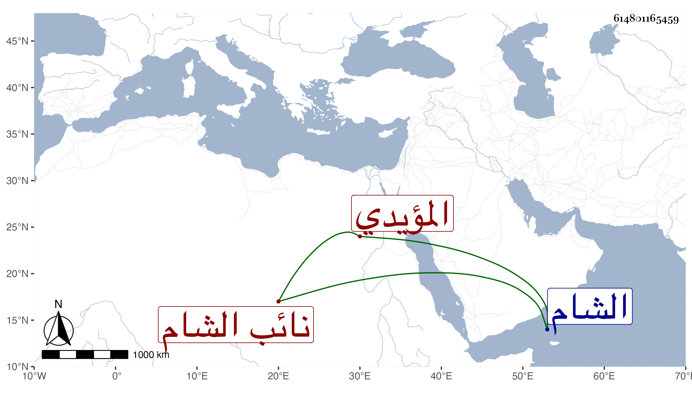

0902Sakhawi.DawLamic.ITO20230111-ara1.EIS1600.614801165459
Biography ID: 614801165459
1320
يونس الأقباي أقباي المؤيدي نائب الشام ويعرف بالبواب وبالمشد . اتصل بعد أستاذه بخدمة المؤيد ثم صار خاصكيا في الدولة المظفرية ثم بوابا في الأشرفية ثم ساقيا في الظاهرية ثم أمير عشرة ، واختص بالظاهر فلم يلبث أن نقله لسد الشربخاناه ثم قدمه ولده ثم ولاه الأشرف الدوادارية الكبرى لكونه كان في الفتنة من حزبه ، وزوجه ابنته الصغرى البكر ، وسار سيرة حسنة بحرمة وافرة وعظمة زائدة وتكرم على مماليكه مع كثرتهم وتقريب للعلماء والصالحين وتأدب معهم وانتفع بصحبة النور أخي حذيفة له في التنبيه على الخير والإرشاد إليه إلى أن مات بعد مرض طويل في يوم الأربعاء ثاني عشرى رمضان سنة خمس وستين ودفن من يومه بتربته العظيمة التي أنشأها بالصحراء عن أزيد من ستين سنة ، وكان شجاعا مقداما غارقا بأنواع الفروسية وغيرها ذا ذوق وحشمة مع الشكالة الحسنة والهيئة الجميلة والطول الفائق حتى عد من حسنات زمنه رحمه الله وإيانا .
